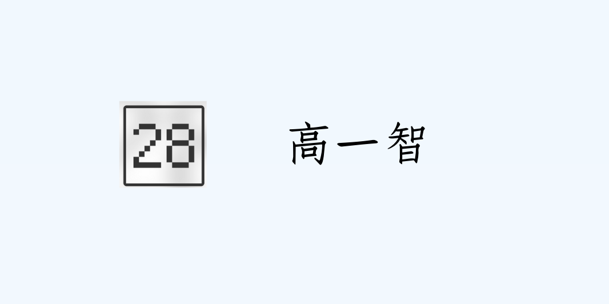

本網站正在更新
若有功能無法正常使用屬正常現象
高一智
班導網站
！＾已有照片內容＾！
成績查詢系統
進入學習歷程檔案雲端

公告
114-1行事曆(校外版)２.pdf
學習資源
英文
授與動詞（授予動詞）是什麼？有哪些？（含例句）＿英文庫
英文「感官動詞」有哪些？來搞懂 hear、feel、see 等用法！ ＿英文庫
國中英語 - 使役動詞 ＿翰林雲端學院
find,leave,keep +O+OC 以豐富例句用法大解密|寫作必備！ ＿高效英語速學網
感官動詞有哪些？一個口訣馬上學會感官動詞 ＿日光英文
連綴動詞有哪些？常見連綴動詞的用法解析 ＿barshai
探究實作
實驗報告格式（下載）
©高一智 by Hsu Yuanwei
網頁瀏覽次數
 高一智
高一智